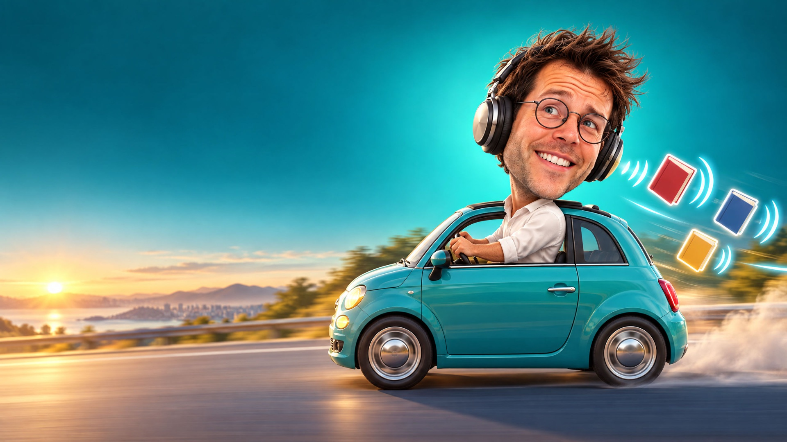
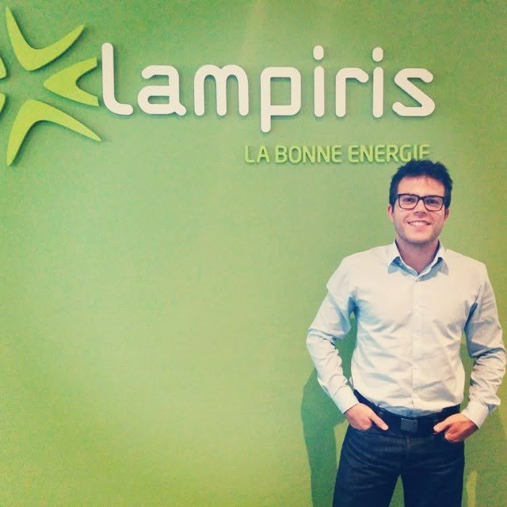
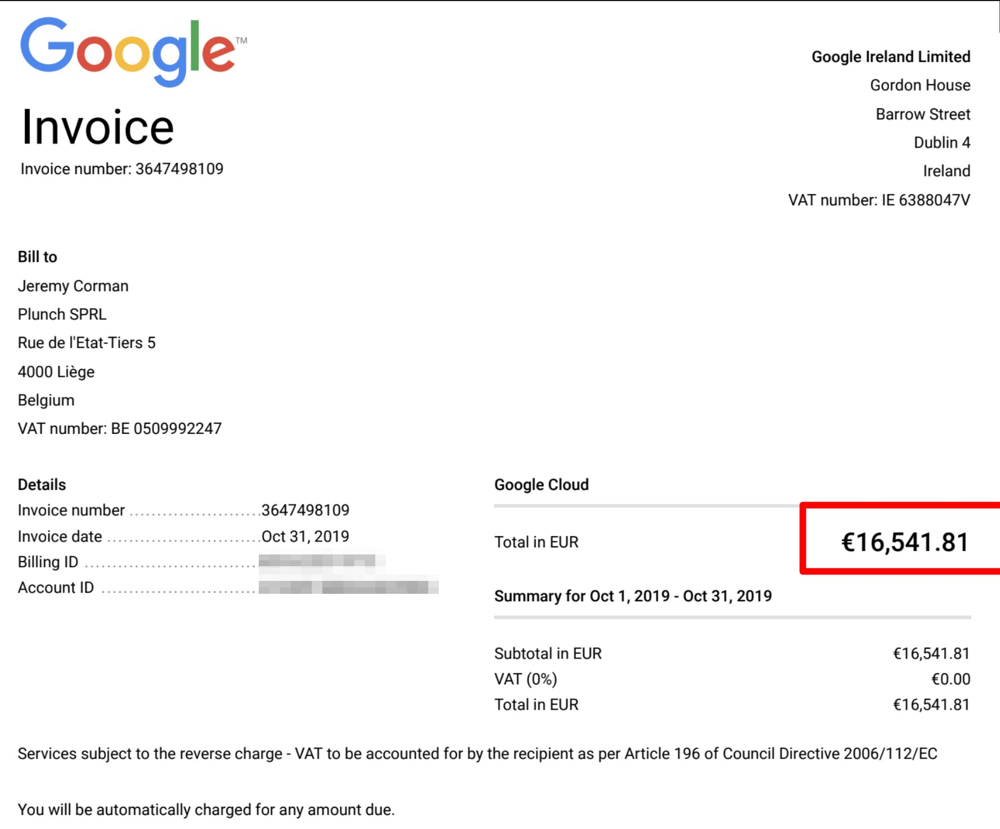
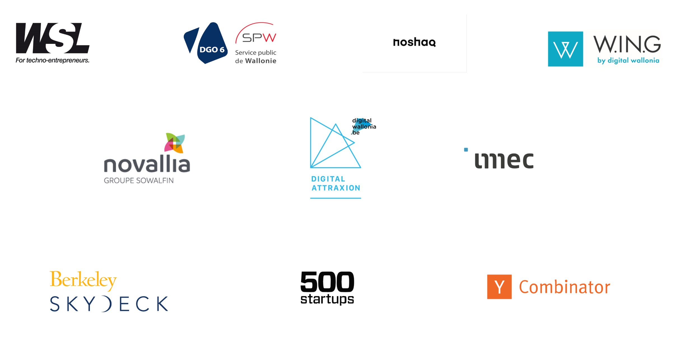

16 years,3 lessons
Jeremy Corman · HELMo
Screen: the title and the caricature.
"Good evening. Quick question before we start, and I want to see hands. Hands up if you've ever had an idea. A project, a business, an app, a shop, a YouTube channel, anything. Just an idea."
(hands go up — raise yours first, say "I'll start")
"Keep it up if you actually launched it."
(most hands drop)
"That's the talk. That gap, right there.
Me too, by the way. All the time.
I've been working for sixteen years. Tonight I'm not going to give you a list of tips. I'm going to walk you through those sixteen years, year by year, including the parts that went badly. And along the way you'll see the same three lessons come back again and again.
I won't tell you what they are yet. Try to spot them."
2010
The internship
Los Angeles
Lesson 1 · Go get it
Don't wait to be found. Go get them.
"2010. I need an internship. Nobody knows me. No network, and my parents don't know anyone in the industry.
So I do the only thing I know how to do: I send emails. Lots of them. Whole campaigns, to companies I've never heard of, in countries I've never set foot in.
And it works. I get several offers. I pick Los Angeles."
click: the lesson
"First lesson, and it's the one you'll see most often tonight: go get it. Don't wait to be found. Nobody is looking for you yet."
2010
First job
Rochefort, underpaid
Lesson 2 · Start before you're ready
The context is never right. Take the job.
"I come back to Belgium. Quick reminder of the mood: the country has no government for 541 days, a world record, we beat Iraq. GDP has just dropped by 3%. One young person in five is unemployed.
And I know what you're thinking: sure, that was fifteen years ago, it's worse now. So let's look. Last December: 19.6% youth unemployment. 22% in Wallonia. And since January, your job-seeker allowance lasts twelve months instead of three years.
So no. It wasn't easier.
The only job I find is in Rochefort. 110 kilometres away. Each way. And underpaid.
I take it."
click: the lesson
"Start before you're ready. The context is never right. If you wait for a good job market, you'll wait your whole life."

2010
220 km a day
3 hours in the car
Lesson 3 · Nothing is wasted
Dead time is free school.
The most important slide of the first half. Don't rush it.
"220 kilometres a day. Three hours in the car. And a starting salary that doesn't even cover the fuel: I'm losing money going to work.
It's the worst part of this whole story.
And it's the best.
Because three hours in a car is also three hours of listening. I start with Stanford's eCorner podcasts. Then Audible, and I go through pretty much every business bestseller in the catalogue.
Two years later, I'm employee of the month. Nobody trained me. I took the one thing I had too much of, dead time, and turned it into a school."
click: the lesson
"Third lesson: nothing is wasted. Even the worst commute of your life can pay you back."
2010
Café Numérique
Still running, 16 years later
Lesson 2 · Start before you're ready
No idea? Start a side project anyway.
"At the same time, I want to start something. From day one. Except I don't have an idea.
So I launch something that isn't even mine: the Café Numérique. Evenings where people talk about technology and innovation. The concept already existed elsewhere, I just brought it here.
And it becomes my lab. I test everything I'm not allowed to test anywhere else: posters, newsletters, sponsorship, public speaking, building a community.
I never made a cent from it. I got two things out of it: confidence, and the habit of taking responsibility.
Sixteen years later, it still exists."
click: the lesson
"Start before you're ready. No idea? Start a side project anyway. The idea comes while you're doing it, not before."
2014
Lampiris
€1M budget

Lesson 1 · Go get it
Ask for trust, not permission.
"And thanks to all that, Auctelia, the Café Numérique, the audiobooks, Lampiris hires me.
One day I want to move 200,000 euros of budget out of banner ads and into Google Ads. Nobody gave me permission, and it's not my level of responsibility.
So I go to my CMO and ask one question: do you trust me?
It works. And then it doesn't stop: I end up making calls on a one-million-euro budget. When Total buys Lampiris, the CEO invites me along as part of the acquisition.
A few years earlier, I was washing dishes at IKEA."
click: the lesson
"Go get it. Ask for trust, not permission. Permission never comes on its own."
2016
Digital Marketing Canvas
My know-how, on one page
Lesson 3 · Nothing is wasted
Everything you know can become a tool.
"2016. Still at Lampiris. I notice I keep explaining digital marketing strategy the same way, to everyone, on whiteboards.
So I put it on one page. I call it the Digital Marketing Canvas.
[To complete by Jerem: one concrete figure or result, for example how many people or schools used it.]
At the time it's a side thing. But it's the first time I turn what I know into a tool other people can use."
click: the lesson
"Nothing is wasted. That one page is where teaching starts for me. You'll see it come back."
2017
Café Numérique goes global
India, Nepal, New York, etc.
Lesson 1 · Go get it
Same outbound, bigger map.
"2017. I want to travel. Problem: I don't know anyone abroad.
So I do exactly what I did in 2010 to find my internship: I send emails, I go get people.
And the Café Numérique goes to India, Nepal, New York, and more.
It's the last thing I do as an employee. And it's what gives me the nerve for what comes next."
click: the lesson
"Go get it. Same skill as in 2010. Just a bigger map."
2017
I quit
Lesson 2 · Start before you're ready
Nobody tells you you're ready.
Screen: "2017" very large, inverted palette. Step away from the screen and talk without slides.
"Stop. I want to pause for two minutes, because something just happened and I want to make sure you saw it.
Everything I've told you so far, the last seven years, I was an employee. The obstacles weren't my choice. They were handed to me. No jobs. A job 220 kilometres away. No permission to touch that budget. My only job was to turn them around.
(pause)
In 2017, I quit. I go out on my own. And from now on, I'm the one who goes looking for trouble.
What changes isn't courage. It's the price. When you're an employee and you mess up, you apologise. When you're on your own and you mess up, you pay. In ten minutes I'll show you the invoice, with the exact amount.
And there's something I only understood much later: during those seven years, I thought I was doing jobs. I was actually building my tools. The 220 kilometres were my school. The Café Numérique was my lab. Lampiris was my test ground, with somebody else's money.
Nobody will ever tell you: that's it, you're ready. In 2017, I wasn't. I went anyway."
click: the lesson
"Start before you're ready. Nobody tells you you are."
2017
First product
Automating my own job
Lesson 2 · Start before you're ready
No brilliant idea? Automate what annoys you.
"I go out on my own. And I hit exactly the same wall as in 2010: I don't have an idea.
Seven years later, same problem. Except this time I do something different. I stop looking for an idea and look at what annoys me in my own work.
And I find it. There's a part of my job I redo by hand every week, and it can be automated. So I automate it. And that thing I built for myself, I decide to sell it.
The product had been under my nose for two years.
Want a business idea? Don't look for an idea. Look at what you redo by hand every Tuesday."
click: the lesson
"Start before you're ready. You don't need a brilliant idea. You need something that annoys you."
2018
First clients
TotalEnergies, a few others… Not growing. And I didn't love it.
Lesson 3 · Nothing is wasted
Even the business you quit pays you back.
"First client: TotalEnergies.
(pause)
Yes, that one. My former employer, the group that had just bought Lampiris. I sell them software I wrote on my own.
Then a few more clients. And that's it. It works, but it's not growing fast enough. And, honestly, I don't like that business. I don't enjoy getting up for it.
So I stop.
What I sold them wasn't really software. It was seven years of credibility. The internship, the 220 kilometres, the Café Numérique, Lampiris: all of that signed the contract for me."
click: the lesson
"Nothing is wasted, including the business you walk away from. And revenue alone is not a reason to stay."
2018
Google trainer
Teaching managers digital marketing
Lesson 2 · Start before you're ready
Try things to find what you love.
"So I have a business that isn't growing and that I don't love. I want to do something I actually enjoy.
I become a trainer for Google. I train managers and entrepreneurs in digital marketing. Remember the Digital Marketing Canvas? That's where it pays off.
And I discover something I didn't know about myself: I love explaining things. What you're watching tonight started there.
And on the side, I start a new business. It's called Gatekeepr."
click: the lesson
"Start before you're ready. You don't find what you love by thinking about it. You find it by trying things."
2019
San Francisco
€50,000 lost


Lesson 3 · Nothing is wasted
An expensive failure is still tuition.
"2019. Gatekeepr, a tool that audits companies' social media strategy. I go to San Francisco. I invest in two things: AI, and people."
click: the Google Cloud invoice, full screen
"This is my Google invoice for October 2019. One month. 16,541 euros and 81 cents.
(pause)
Look at the date. October 2019. ChatGPT comes out three years later.
In total, I lost 50,000 euros. And nobody came. Not 'a few people'. Nobody. I thought: if the product is good, they'll come. That's false. It's been false for twenty years, and I learned it for 50,000 euros."
click: the logo wall
"And before you ask whether anyone helped me fund all this: here you go. WSL, Noshaq, W.IN.G, Novallia, imec, Berkeley SkyDeck, 500 Startups, Y Combinator.
They all said no.
And on Gatekeepr, they were right."
click: the lesson
"Nothing is wasted. For eighteen months I worked with AI every day, at a time when nobody around me talked about it. That invoice is the most expensive of my life. It's also the most profitable. I just didn't know it yet."
2021
Freelance Head of Marketing
INK, Houston
Lesson 1 · Go get it
Nothing to sell? Sell yourself.
"No more business. No more product. Back to zero.
So I do something slightly humiliating, and it may be the best decision in this whole story. Remember the freelancers I used to hire, in Ukraine and Russia? I go back to the platform where I hired them.
Except this time I'm not looking for someone to hire. I create a profile, and I put myself up for hire.
A while later, a Texas startup writes to me. They're called INK, they're in Houston, they need a Head of Marketing. Freelance. Remote. A guy from Liège.
At INK, we take the website from zero to a million visitors in under a year. The engine is generative AI. Before ChatGPT.
See what happened? The 50,000 euros lost in San Francisco are exactly what makes me useful at INK. I paid for my AI training in 2019. It paid me back in 2021.
And on the side, I start Marketing Makers and hire two people."
click: the lesson
"Go get it. When you have nothing left to sell, sell yourself."
2022
Airplan
1,400 architecture firms · 3 partners
Lesson 2 · Start before you're ready
Sell it before you build it.
"2022. Airplan. Software for architects, to manage their planning permission files.
And you know what? I sold it before I built it. Exactly like at Auctelia in 2010, where we sold machines we didn't own. Twelve years later, same lesson.
Today, 1,400 architecture firms use it, and we're three partners."
click: the two halves of the week
"And this is what my week looks like today. Fifty percent Airplan. Fifty percent giving sessions on AI, like tonight.
Look at those two halves. The first one is the product I never had. The second one is the job I stumbled on at Google.
Everything I was missing became my job."
click: the lesson
"Start before you're ready. Sell it before you build it."
2026
3 lessons
What will you start?
"Sixteen years in fifty minutes. Let me sum up.
I never had what it takes. No network, no money, no idea, no product, no team, no safety net. Ten incubators and funds said no, including Y Combinator.
And three things kept coming back."
click: lesson 1
"One. Go get it. The emails in 2010, the budget at Lampiris, the freelance profile. Nobody came looking for me. Not once."
click: lesson 2
"Two. Start before you're ready. The job in Rochefort, the Café Numérique, quitting in 2017, Airplan sold before it existed. I was never ready. I went anyway."
click: lesson 3
"Three. Nothing is wasted. The 220 kilometres gave me my knowledge. The Café Numérique gave me my lab. The 50,000 euros gave me AI."
click: the question
"So here's the only thing I'll ask you. Start a project. Any project. It's not the project that matters, it's what it forces you to learn.
What will you start?
Thank you."
Every slide has its own address: add #/7 to the URL to open slide 7.